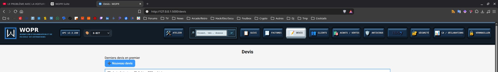
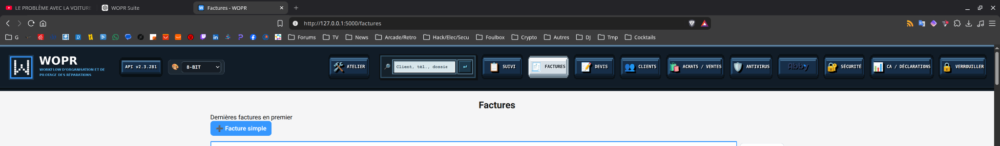
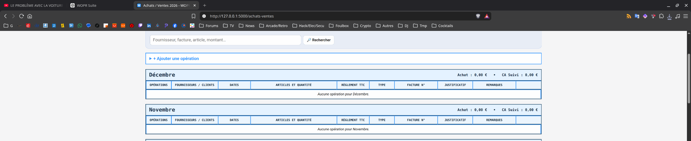

🔧 Réparations
Dossiers, statuts, suivi technique, recherche client rapide, aide code postal → ville, restitution et tableau de bord Atelier.
Workflow d’Organisation et de Pilotage des Réparations
Un logiciel local de gestion d’atelier pour centraliser réparations, clients, devis, factures, achats/ventes, documents et administratif, avec quatre thèmes dont le mode 8-BIT finalisé en 2.3.285.
WOPR est né d’un besoin concret : éviter les doubles saisies et la multiplication des fichiers et outils séparés pour gérer un atelier de réparation.
Dossiers, statuts, suivi technique, recherche client rapide, aide code postal → ville, restitution et tableau de bord Atelier.
Fiches clients, historique enrichi, archivage/restauration, import, recherche et outils de communication.
Création, modification, PDF, envoi par e-mail et facturation simple ou liée à un dossier.
Achats fournisseurs, justificatifs, règlements et suivi du chiffre d’affaires.
PIN local, paramètres privés, sauvegardes et séparation des données sensibles.
Abby, SMTP, Google Contacts et autres fonctions optionnelles selon la configuration.

Devis : interface 2.3.285 et actions harmonisées en thème 8-BIT.

Factures : recherche, PDF, impression, envoi et dossier avec palette d’actions cohérente.

Achats / Ventes : tableau mensuel et actions 8-BIT de la release 2.3.285.
WOPR est 100 % gratuit et distribué sous licence GNU GPLv3.
| Système | Statut |
|---|---|
| Linux | Supporté |
| Windows | Supporté |
| macOS | Non supporté |
macOS : aucun binaire officiel, aucun test de compatibilité et aucun support garanti.
WOPR est développé et utilisé au quotidien par Foul-Fix. Le projet est publié avec son code source et sa documentation.
Version publique 2.3.285Développé par Foul-Fix, avec l’aide de ChatGPT (OpenAI) pour l’assistance au développement, à la documentation et aux tests.